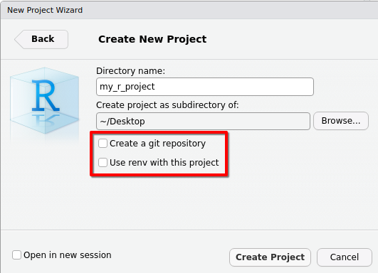

24 Virtual environments: R (renv)
This chapter is adapted from the DSCI 521 notes, Virtual Environments: R. If you took DSCI 521, it is review.
Learning Objectives
- Create an
renvenvironment for an R project, and explain what.Rprofile,renv/andrenv.lockeach do - Explain how an implicit snapshot finds the packages a project uses by scanning its code
- Record packages with
renv::snapshot(), check the project withrenv::status(), and recreate it withrenv::restore() - Compare
renv’s commands and files withuv’s
24.1 R environments
In R, environments are managed by renv, which works with similar principles as uv and other virtual environment managers, but the commands are different. To see which commands are used in renv, you can visit the project website: https://rstudio.github.io/renv/articles/renv.html.
Briefly,
renv::init()creates a new environment in the current directory or project.renv::snapshot()saves the environment to a file,renv.lock. Installing and removing packages are done as usual with theinstall.packages()andremove.packages()commands.renv::restore()updates the current environment from therenv.lockfile.
renv assumes and enforces the “one project, one environment” mantra of virtual environments. conda lets you “activate” an environment and move across different projects. renv, like uv, prefers it when all your work is contained in a single project. Each project, for example each assignment repository, gets its own renv environment.
Which of the following commands is used to initialize a new renv environment in an R project?
renv::create()renv::activate()renv::init()renv::start()
One of the other distinguishing factors between R and Python is CRAN, the package repository for R. CRAN checks every package it hosts, every day, and removes packages that stop working with the rest of CRAN, so on any given calendar day the packages on CRAN are meant to install together.
24.2 An example R project
Here we’ll go through an example of using renv in the context of an RStudio project. As with uv, you don’t “activate” and “deactivate” it manually. One of the nice things is renv works naturally within an RStudio project.
The New Project creation wizard in RStudio has an option to enable the folder as a git repository, and also to set it up with renv. This does the same thing as running renv::init() in the current project.

Our project has one script, analysis.R, that uses dplyr:
analysis.R
library(dplyr)
species_counts <- starwars |>
count(species, sort = TRUE)Running renv::init() in the project gives:
renv::init()Output
- Linking packages into the project library ... Done!
The following package(s) will be updated in the lockfile:
# CRAN -----------------------------------------------------------------------
- cli [* -> 3.6.6]
- dplyr [* -> 1.2.1]
- generics [* -> 0.1.4]
- glue [* -> 1.8.1]
- lifecycle [* -> 1.0.5]
- magrittr [* -> 2.0.5]
- pillar [* -> 1.11.1]
- pkgconfig [* -> 2.0.3]
- R6 [* -> 2.6.1]
- renv [* -> 1.3.1]
- rlang [* -> 1.3.0]
- tibble [* -> 3.3.1]
- tidyselect [* -> 1.2.1]
- utf8 [* -> 1.2.6]
- vctrs [* -> 0.7.3]
- withr [* -> 3.0.3]
The version of R recorded in the lockfile will be updated:
- R [* -> 4.6.2]
- Lockfile written to "~/Desktop/my_r_project/renv.lock".We never told renv about dplyr, yet it is in the lockfile, along with every package dplyr depends on.
renv found dplyr by reading our code. By default, renv::init() and renv::snapshot() scan the project’s R files for library() and require() calls (and pkg:: uses) and record the packages they find. renv calls this an implicit snapshot, and it is the setting stored in renv/settings.json:
renv/settings.json
"snapshot.type": "implicit",With implicit snapshots, your code is the list of packages the project declares. renv: declaring packages in DESCRIPTION builds on this with an explicit list instead.
24.2.1 Environment files
When you either create a new project with renv enabled or run renv::init() in the current working directory (getwd()), a few new files will be created:
.Rprofilein the current project directoryrenv/directoryrenv.lockfile
Before we talk about what each file and directory does, now when you start a new R session or re-open your RStudio project, you will see a line that will read something like:
Output
- Project '~/Desktop/my_r_project' loaded. [renv 1.3.1]How does R know that the project uses renv? It’s because of the .Rprofile file. This is a special file that R will read at the start of every session. R reads up to two startup profiles, in this order:
- the site-wide profile,
Rprofile.sitein the R installation, if it exists - one user profile,
.Rprofile, from the current project or working directory, or, only if there is none there, from your home directory
So a project’s .Rprofile is read instead of the one in your home directory, not as well as it.
There is a similar file called .Renviron that only stores key-value environment variables, and R looks for it in the same two places, in the same order. You can read more about these initialization files in R’s own documentation, ?Startup.
The renv .Rprofile will add a single line:
.Rprofile
source("renv/activate.R")This is the line that “activates” the renv environment for you automatically, assuming you are in the correct working directory.
All the environment files and packages are installed in the renv/ directory. This directory has its own .gitignore file that will ignore the correct things for you in that directory, so you do not need to worry about checking in your entire set of packages.
Finally, the renv.lock file is the file that contains all the packages used in the repository, their versions, and where they were installed from (e.g., CRAN or GitHub).
24.2.2 Snapshot packages
When you install and use R packages in your project, you will occasionally run renv::snapshot(). This will update the renv.lock file with all the packages and dependencies for you. Do not forget to add, commit, and push this file to your remote repository.
Say we add library(tidyr) to analysis.R. renv::status() notices that the code now uses a package that is not installed:
renv::status()Output
- The project is out-of-sync -- use `renv::status()` for details.
The following package(s) are used in this project, but are not installed:
- tidyr
See `?renv::status` for advice on resolving these issues.Install it as usual:
install.packages("tidyr")Output
The following package(s) will be installed:
- cpp11 [0.5.5]
- purrr [1.2.2]
- stringi [1.8.9]
- stringr [1.6.0]
- tidyr [1.3.2]
These packages will be installed into "~/Desktop/my_r_project/renv/library/macos/R-4.6/aarch64-apple-darwin23".
# Installing packages --------------------------------------------------------
✔ stringi 1.8.9 [linked from cache]
✔ stringr 1.6.0 [linked from cache]
✔ cpp11 0.5.5 [linked from cache]
✔ tidyr 1.3.2 [linked from cache]
✔ purrr 1.2.2 [linked from cache]
Successfully installed 5 packages in 7.6 milliseconds.[linked from cache] means renv had downloaded these versions before, for another project, and linked them in instead of downloading them again, the same idea as uv’s cache.
Then snapshot, so the lockfile records it:
renv::snapshot()Output
The following package(s) will be updated in the lockfile:
# CRAN -----------------------------------------------------------------------
- cpp11 [* -> 0.5.5]
- purrr [* -> 1.2.2]
- stringi [* -> 1.8.9]
- stringr [* -> 1.6.0]
- tidyr [* -> 1.3.2]
- Lockfile written to "~/Desktop/my_r_project/renv.lock".Unlike uv add, installing a package does not update the lockfile. Until you run renv::snapshot(), your collaborators will not get the package.
24.2.3 Restore packages
As you work on a project with other people and packages get updated, you will occasionally run renv::restore() to install any missing packages on your local R environment. Occasionally renv may tell you things are out of sync and will prompt you to run renv::status() or renv::restore().
Here is a collaborator’s fresh clone of the project, which has the committed files but no renv/library/:
renv::restore()Output
# Bootstrapping renv 1.3.1 ---------------------------------------------------
- Using renv 1.3.1 from global package cache
- None of the packages recorded in the lockfile are currently installed.
- Use `renv::restore()` to restore the project library.
The following package(s) will be updated:
# CRAN -----------------------------------------------------------------------
- cli [* -> 3.6.6]
- cpp11 [* -> 0.5.5]
- dplyr [* -> 1.2.1]
...
# Installing packages --------------------------------------------------------
✔ tidyselect 1.2.1 [linked from cache]
✔ magrittr 2.0.5 [linked from cache]
...
✔ purrr 1.2.2 [linked from cache]
Successfully installed 20 packages in 16 milliseconds.(shortened)
24.3 renv and uv side by side
| Job | renv (R) |
uv (Python) |
|---|---|---|
| Start an environment in a project | renv::init() |
uv init --bare |
| Install a package | install.packages() |
uv add |
| Record what you got in the lockfile | renv::snapshot() |
uv lock (uv add does it for you) |
| Recreate the environment from the lockfile | renv::restore() |
uv sync |
| Check the environment against the lockfile | renv::status() |
uv sync --check |
| The lockfile | renv.lock |
uv.lock |
| What the project declares | the code’s library() calls (implicit), or DESCRIPTION (explicit) |
pyproject.toml |
24.4 Takeaway
renv is not the same as a conda environment where you can activate an environment, and move anywhere in your filesystem to run code. Many virtual environment systems, uv included, assume you have a single environment for each project or directory. Sometimes IDEs allow you to override the currently activated environment, but it lowers the reproducibility of your projects if you do that.
Finally, the renv.lock file tracks every package and dependency you use in your project, as uv.lock does. With implicit snapshots there is no separate file that lists only the packages you asked for. Your code plays that part. To declare them in a file of their own, the way pyproject.toml does for uv, see renv: declaring packages in DESCRIPTION.
What would be the main files committed to the repository by default when using renv?
- A. All content of the
renvfolder in your project, becauserenvstores all packages there. - B.
renv.lockandrenv/activate.R, because both are necessary to reproduce and activate the environment on another machine, and most localrenv/folders are excluded in.gitignore. - C.
renv/libraryandrenv/stagingdirectories, becauserenv, in contrast toconda, needs to have binary packages in the repository. - D. Only the source code of the packages in
renv/librarybecause we want our environment to be identical